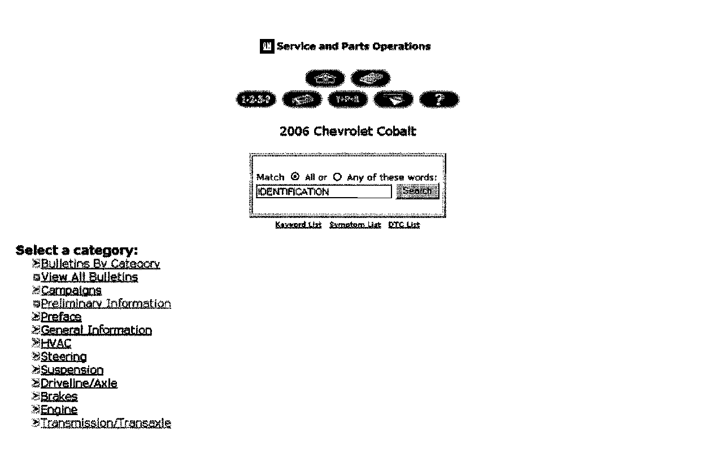
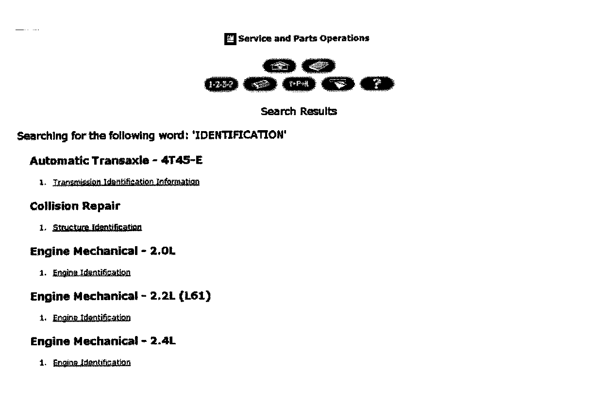

Engine, A/T - Identification Information
INFORMATIONBulletin No.: 06-00-89-031B
Date: March 28, 2011
Subject: Engine and Automatic Transmission/Transaxle Identification
Models:
2004-2012 GM Passenger Cars and Trucks
Supercede:
This bulletin in being revised to add the 2012 model year and update the engines listed. Please discard Corporate Bulletin Number 06-00-89-031A (Section 00 - General Information).
The purpose of this bulletin is to show dealers and retailers how to find engine and automatic transmission/transaxle identification information for original equipment and remanufactured assemblies.
All original equipment identification information is available in SI. To easily find the information for the vehicle line you are working on, select the vehicle type and type the word "identification" in the search box. This search (described below) will provide the list of the different assemblies to choose from.

1. Type in the word "identification" in the search dialog box.

2. The different engine and transmission assemblies available for that vehicle will be displayed. Click the link for the desired engine and/or transmission identification information.
Remanufactured Engine and Transmission Labeling
All remanufactured transmission labels are in the same location as the original equipment labels and location can be found by using the method above.
All remanufactured engines have a label on the right or left side of the block. A list is provided below to indicate which side of the block the label may be found for each engine application.
Right Side of Block
- 2.4L (Quad 4)
- 2.5L
- 2.8L/3.5L/3.7L/4.2L (I4/I5/I6)
- 3.1L/3.4L/3.5L/3.9L (HV V6)
- 3.8L
- 4.3L
- 4.6L (PV8)
- 6.0L/7.4L/8.1L (Big Block)
Left Side of Block
- 2.2L/2.4L (Ecotec)
- 4.8L/5.3L/6.0L/6.2L(Gen III/Gen IV)
- 6.6L Dmax Diesel

Disclaimer